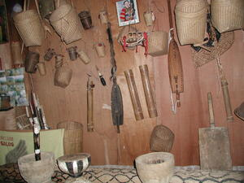

kasangkapan 
/kasaŋkapan/
n.
“possession”
n.
a possession such as clothing or blankets, or an appliance such as a radio
Egmasalig iya ka kasangkapan te mabasuk ne etew.
The possession(s) of an industrious person will certainly increase.
Wrd.Gloss: possession
Eng. possession; appliance; utensil; tool; furnishing; household belonging; equipment; gear; instrument; thing
Tag. kasangkápan
Ilo.: alikámen ti baláy
Ceb. butang
OCM: General Tools (412), Property in Movables (422)
Online dict status: -
Usage level: M
v.
for someone (egkekasangkapan, migkekasangkapan/ingkekasangkapan, agent, egkA><ø-rdpCV-) to acquire possession
Eng. acquire; obtain
Online dict status: -
Usage level: M
Updated by: RJH,RJH,AAA,QDL,RJH
Last updated: 28/Oct/2014
"kasangkapan" in healthbook "Migpamawian ni Inuk ka sumbaley rin ne migpangaliskis"
"kasangkapan" in healthbook "Naluwasan si Iwayan"
"kasangkapan" in healthbook "Nabekeg si Junjun teg keenen"
This page last updated: 28-Dec-2019
Copyright © 2009-2014, Matigsalug Language Christian Association, Inc